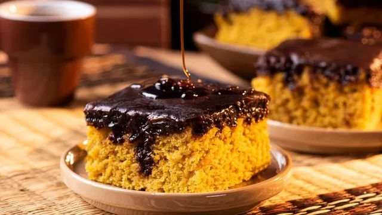
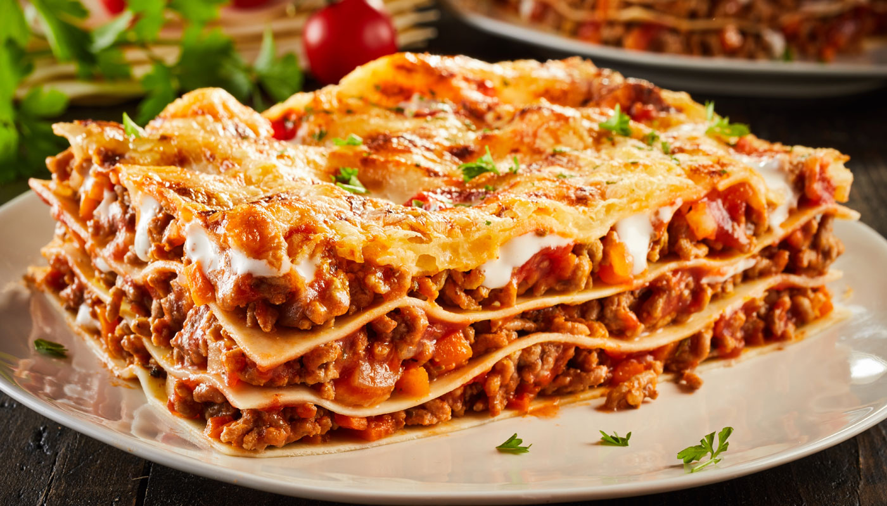
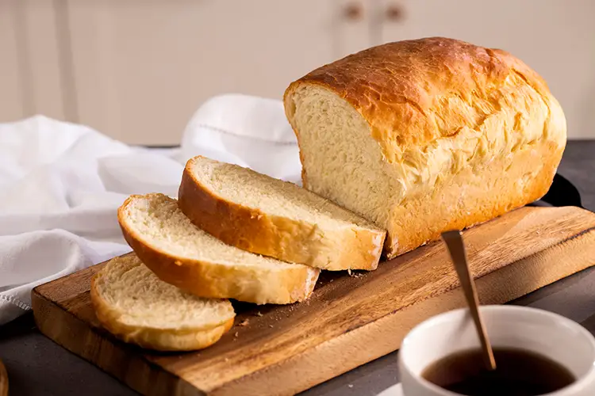
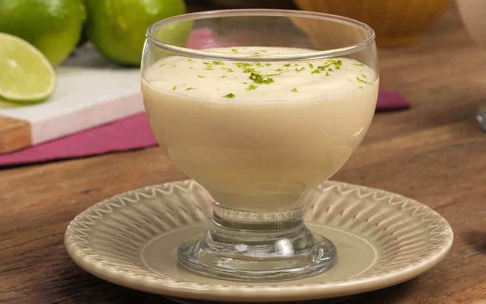

Bolo de CenouraMassa fofinha e cobertura de chocolate com aquela casquinha crocante inesquecivel.

Bolo de CenouraMassa fofinha e cobertura de chocolate com aquela casquinha crocante inesquecivel.

Lasanha ClássicaA tradicional lasanha com molho à bolonhesa caseiro e muito queijo gratinado.

Pão Caseiro FácilNão precisa sovar! Receita rápida que garante um pão quentinho para o café da tarde.

Mousse de Limão FitSobremesa super refrescante, pronta em 10 minutos e com pouquissimas calorias.